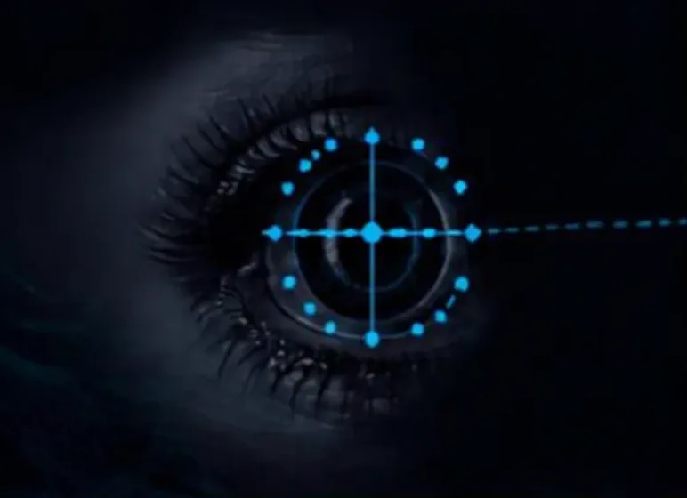
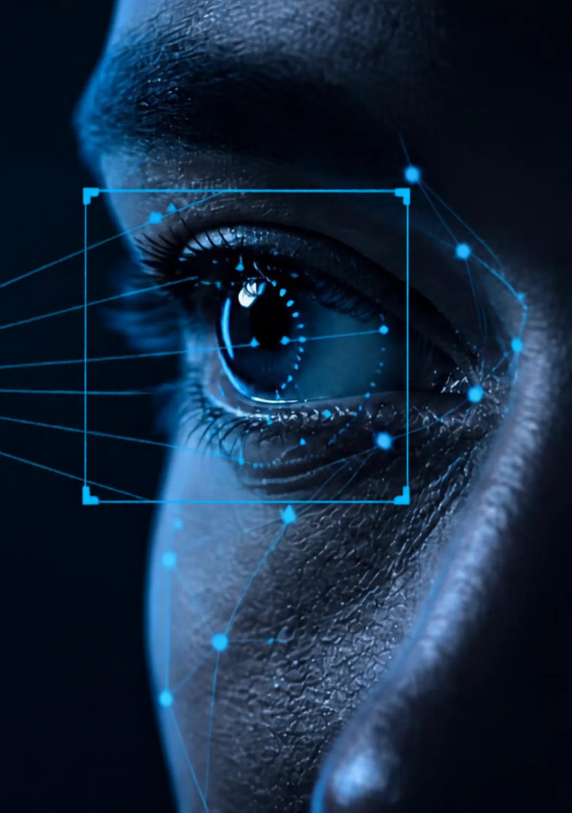
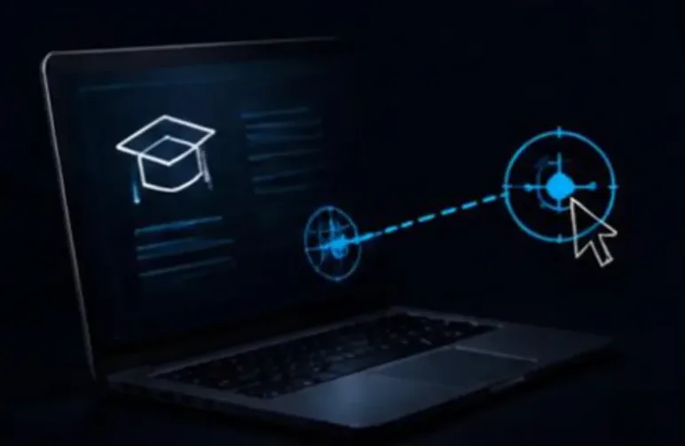
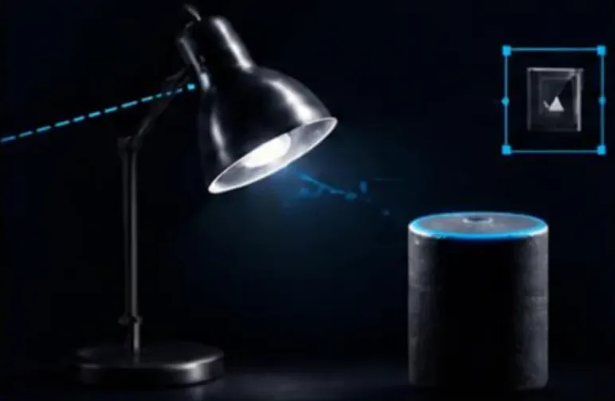
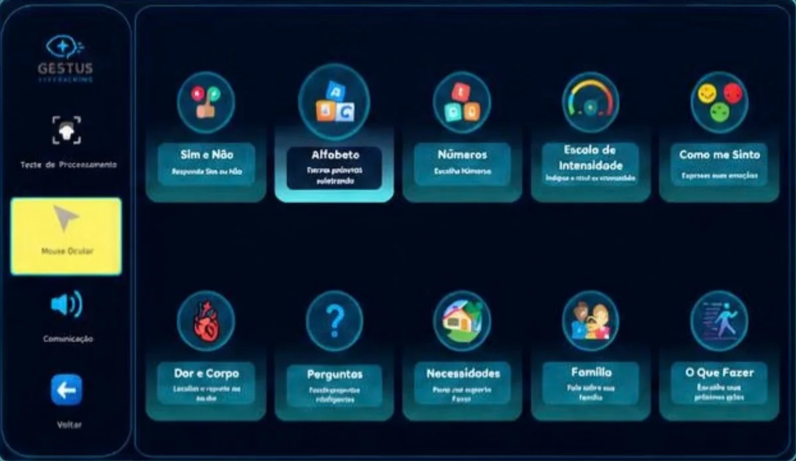
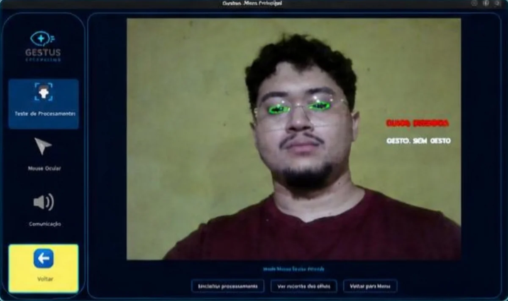
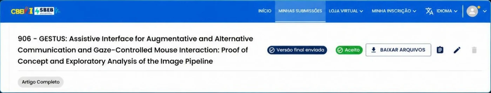
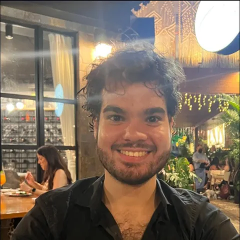
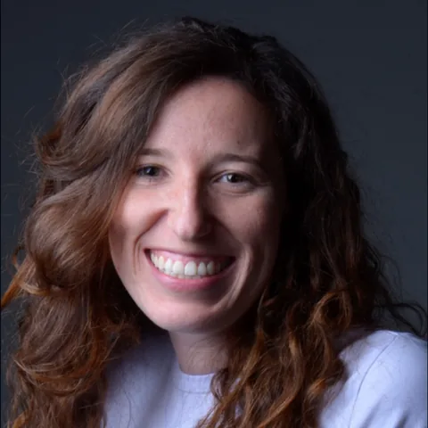
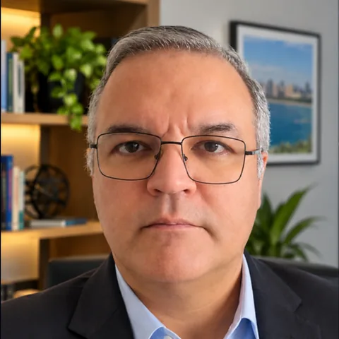

Comunicar
Pranchas de comunicação com síntese de voz para expressar necessidades, sentimentos e mensagens.
Tecnologia assistiva através do olhar
Um software que transforma o olhar e as piscadas em fala, texto e cliques, usando apenas uma webcam comum. Feito para quem tem muito a dizer e poucas formas de se expressar.
Experimente: pare o cursor sobre um dos botões por um segundo. É assim que o GESTUS clica com o olhar, sem precisar do mouse.

Pessoas com ELA, sequelas de AVC e outras limitações motoras severas muitas vezes perdem a fala e o movimento das mãos. A cabeça continua cheia de coisas para dizer.
Os rastreadores oculares comerciais resolvem parte do problema, mas são caros e dependem de hardware dedicado. Ficam longe da realidade da maioria das famílias, escolas e serviços de saúde.
A lacuna não é só técnica. É de acesso.
Fontes: IBGE, PNAD Contínua 2022; Organização Mundial da Saúde.
Nada de equipamento especial. A câmera que já vem no notebook é suficiente para o GESTUS entender para onde a pessoa olha e quando ela pisca de propósito.
Uma câmera convencional captura o rosto em tempo real.
O sistema localiza o rosto e processa a região dos olhos.
Estima a direção do olhar e reconhece piscadas como comandos.
O GESTUS traduz esses sinais na intenção da pessoa.
A intenção vira voz, mensagem ou clique na tela.

Pranchas de comunicação com síntese de voz para expressar necessidades, sentimentos e mensagens.

Mouse ocular para usar o computador, estudar e navegar na internet com autonomia.

Levar a interação para outros dispositivos e para o ambiente da casa.
As telas abaixo são do sistema real, em desenvolvimento na Universidade Federal do Ceará.


GESTUS: Assistive Interface for Augmentative and Alternative Communication and Gaze-Controlled Mouse Interaction. Proof of Concept and Exploratory Analysis of the Image Pipeline.

Modelo proposto para disponibilizar, ensinar a usar e acompanhar a aplicação.
Acesso à plataforma e aos recursos do GESTUS.
Vídeo tutorial e orientação inicial para configurar e usar.
Em clínicas, instituições de assistência, escolas ou em casa, pelo próprio usuário.
Acompanhamento e esclarecimento de dúvidas depois da compra.
Modelo de negócio em proposta, sujeito a validação técnica, regulatória e de uso.
O que vem pela frente na pesquisa e no desenvolvimento.
Avaliar a usabilidade e a experiência de interação com quem vai usar o sistema no dia a dia.
Testar diferentes condições de iluminação, uso de óculos, posicionamento e movimento.
Medir de forma sistemática o desempenho da detecção e da classificação do olhar.
Explorar novas formas de interação e a integração com outros dispositivos.
Estudantes e professores da Universidade Federal do Ceará.

Marco Antonio
Estudante de Engenharia de Computação

Profa. Camila
Professora, UFC

Prof. Edilson Rocha
Professor, UFC
Quer testar o GESTUS, apoiar o projeto ou pesquisar com a gente? Fale com Luis Carlos, da equipe.